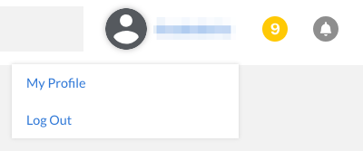
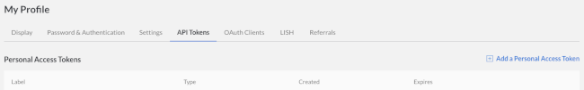
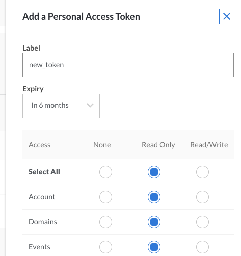

Getting Started with the Linode API
Updated by Linode Written by Jared Kobos
Create a Linode Using the Linode API
The Linode API allows you to automate any task that can be performed by the Cloud Manager, such as creating Linodes, managing IP addresses and DNS, and opening support tickets.
For example, this command creates a new 2GB Linode, deploys a Debian 9 image, and boots the system:
curl -X POST https://api.linode.com/v4/linode/instances \
-H "Authorization: Bearer $TOKEN" -H "Content-type: application/json" \
-d '{"type": "g5-standard-2", "region": "us-east", "image": "linode/debian9", "root_pass": "root_password", "label": "prod-1"}'
This guide will help you get set up to run this example. Note that if you run this command, you will create and be charged for a 2GB Linode.
Get an Access Token
Only authorized users can add Linodes and make changes to your account, and each request must be authenticated with an access token.
The easiest way to get a token is through the Cloud Manager.
NoteIf you are building an application which will need to authenticate multiple users (for example, a custom interface to Linode’s infrastructure for your organization), you can set up an OAuth authentication flow to generate tokens for each user.
Create an API Token
Log in to the Cloud Manager.
Click on your username at the top of the screen and select My Profile.

Select the API Tokens tab:

Click on Add a Personal Access Token and choose the access rights you want users authenticated with the new token to have.

When you have finished, click Submit to generate an API token string. Copy the token and save it in a secure location. You will not be able to view the token through the Cloud Manager after closing the popup.
Authenticate Requests
This token must be sent as a header on all requests to authenticated endpoints. The header should use the format:
Authorization: Bearer <token-string>
Store the token as a temporary shell variable to simplify repeated requests. Replace <token-string> in this example:
TOKEN=<token-string>
Get Configuration Parameters
Specify the type, region, and image for the new Linode.
Review the list of available images:
curl https://api.linode.com/v4/images/Choose one of the images from the resulting list and make a note of the
idfield.Repeat this procedure to choose a type:
curl https://api.linode.com/v4/linode/types/Choose a region:
curl https://api.linode.com/v4/regions
Build the Final Query
Replace the values in the command below with your chosen type, region, and image, and choose a label and secure password.
curl -X POST https://api.linode.com/v4/linode/instances \
-H "Authorization: Bearer $TOKEN" -H "Content-type: application/json" \
-d '{"type": "g5-standard-2", "region": "us-east", "image": "linode/debian9", "root_pass": "root_password", "label": "prod-1"}'
Advanced Query Options
Pagination
If a results list contains more than 100 items, the response will be split into multiple pages. Each response will include the total number of pages and the current page. To view additional pages, add a page parameter to the end of the URL. For example, querying the available kernels produces more than 200 results:
curl https://api.linode.com/v4/linode/kernels
|
|
The pages field indicates that the results are divided into three pages. View the second page:
curl https://api.linode.com/v4/linode/kernels?page=2
If you prefer a smaller number of items per page, you can override the default value with the page_size parameter:
curl https://api.linode.com/v4/linode/kernels?page_size=50
Filter Results
The API also supports filtering lists of results. Filters are passed using the X-Filter header and use JSON format. You can filter on almost any field that appears in a response object and the API documentation specifies which fields are filterable.
The following query uses the deprecated and vendor fields to return all current Debian images:
curl https://api.linode.com/v4/images/ -H 'X-Filter: { "vendor": "Debian", "deprecated": false}'
|
|
More complex searches are possible through the use of logical operators. Use or to return a list of all Debian and Ubuntu images:
curl https://api.linode.com/v4/images/ -H "{"+or": [{"vendor":"Debian"}, {"vendor":"Ubuntu"}]}"
See the Linode API documentation for a full list of supported operators.
More Information
You may wish to consult the following resources for additional information on this topic. While these are provided in the hope that they will be useful, please note that we cannot vouch for the accuracy or timeliness of externally hosted materials.
Join our Community
Find answers, ask questions, and help others.
The Linode Classic ManagerIf you're using the Linode Classic Manager instead of the new Cloud Manager, you can still view the Classic Manager version of this Getting Started with the Linode API guide.
This guide is published under a CC BY-ND 4.0 license.